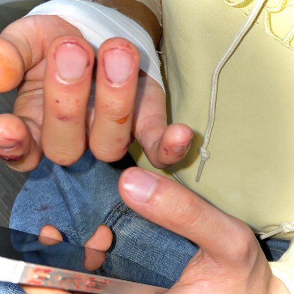
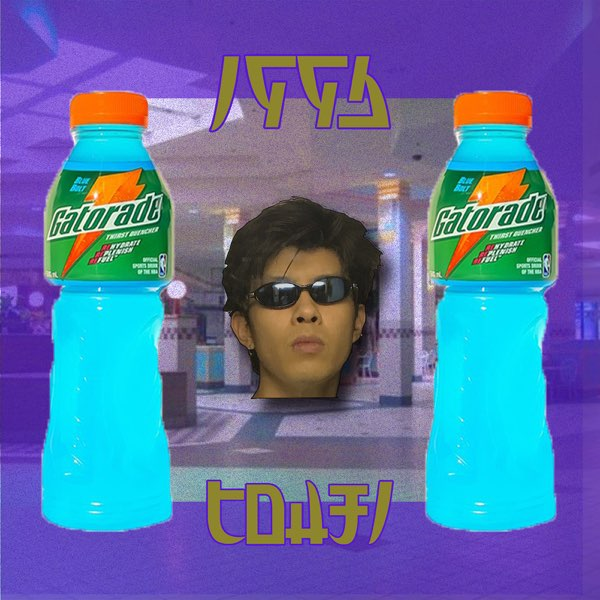

Tohjiのディスコグラフィ
アルバム
時系列順
t-mix

- HANABI (feat. Palmistry & Mechatok)
- Valley says (feat. eternalusa)
- ULTRA RARE (feat. Mechatok)
- Twilight Zone (feat. Bladee)
- shell (feat. yeule)
- WATER WAY (feat. Mechatok)
- Super Ocean Man
- seaside train skit
- 舞浜 (feat. Thrilliam Angels)
- ねるねるねるね
- UFO (feat. Mechatok)
KUUGA

- Aegu
- Yodaka
- Tob
- Naked
- Oni
- Iron D**k
- Errday
- Outro
angel

- intro
- Snowboarding
- Rodeo
- mamasaidloveme
- HI-CHEW
- Jetlife feat. Loota
- トウジ負傷
- on my own way
- miss u
EP
時系列順
broken ep

- rip ma FD skit
- カモメ
- on n on (early in the morning)
- a piano boy skit
- M78 (ma FD)
9.97-EP

- sugAA
- flu (feat. Fuji Taito)
- mAntle fuck
- sAru
1996-EP

- IDWPA -prelude-
- Veen Veeen!
- Oh Boy
- Yugure